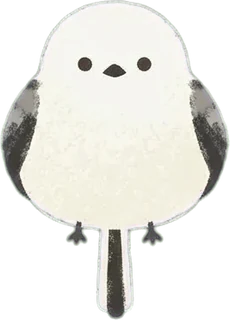

HOKKAIDO
全道
×1.0
圖層
行程路線
每天一色，依時間順序連線
道路・JR
高速道路・國道・JR 路線
秋色風貌
楓紅丘陵・大雪山初雪・紅葉樹群・銀杏街道
時間風景
18–24 花火・23–05 星空・05–18 海洋生物
深色模式
預設關閉
熊出沒
近 3 個月通報＋去年同期（札幌）
30 天內
31–90 天
去年 10–11 月
空心＝痕跡
最新：
ひぐまっぷ
札幌市
小樽市
模擬
▶
現在
街道骨架 ©
OpenStreetMap
contributors
×1 全道
×5.5 道央
×40 景點
×160 市區
＋
－
我
小樽
札幌
道央
全道